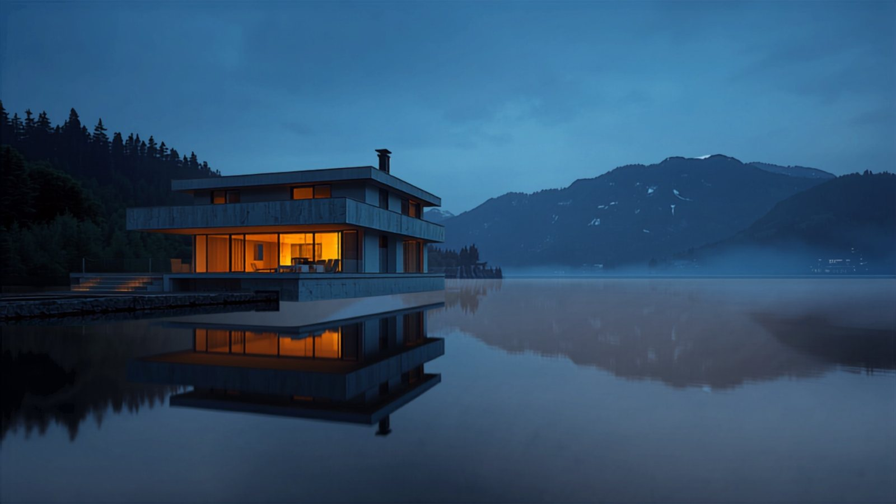
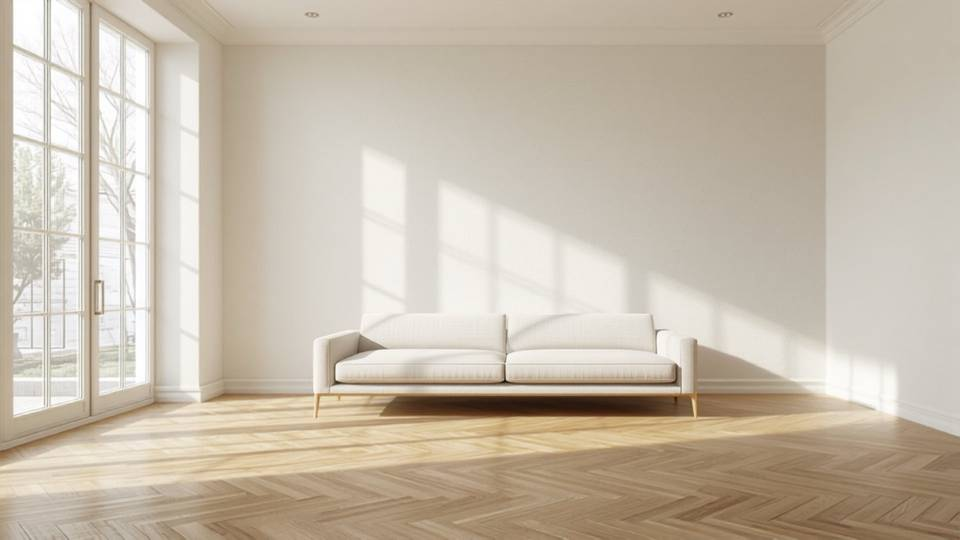
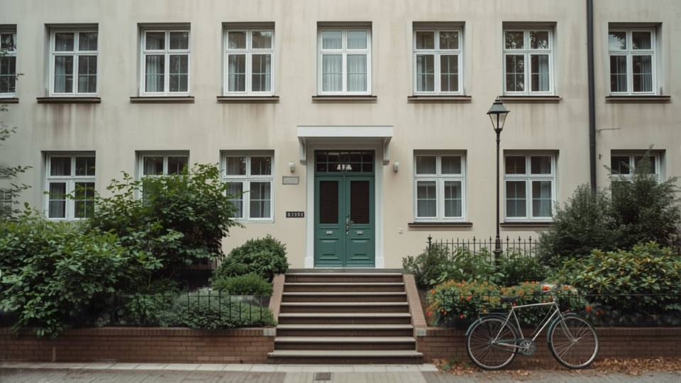

Wo das Wasser
still wird.
Immobilien kaufen, mieten, verkaufen, verwalten — schweizweit
Eine Adresse für die ganze Immobilie.
Hedonische Bewertung innert 48 Stunden — kostenlos, als Richtwert deklariert, mit persönlichem Zweitschritt.
Kostenlos anfragen → FinanzierungKann ich mir das leisten?Tragbarkeit und monatliche Kosten in einer Minute — an jedem Objekt und als eigenes Werkzeug.
Tragbarkeit rechnen → SuchaboNeue Objekte zuerst sehen.Speichern Sie eine Suche. Wir melden uns nur, wenn etwas Passendes erscheint — ohne Konto zum Start.
Suche speichern → ExclusiveMandate, die wir vertreten.Objekte, die Fourwalls im Auftrag der Eigentümerschaft vermarktet — vollständig dokumentiert, in Szene gesetzt.
Exclusive ansehen → NeubauProjekte vor dem ersten Spatenstich.Neubauprojekte von Bauträgern, mit Etappen, Preislisten und Bezugsterminen.
Neubauprojekte → WissenBevor Sie entscheiden.Ratgeber, Marktberichte und Rechner — kurz, geprüft, ohne Verkaufsdruck.
Ratgeber lesen →
Wir zeigen, was Ihr Haus wert ist — und wem.
Bewertung, Strategie, Fotografie zur richtigen Stunde, Käuferqualifikation, Besichtigungen, Verhandlung, Notariat, Übergabe. Eine Ansprechperson, ein Honorar nur bei Erfolg.
- Bewertung48 Stunden
- Honorar2.0 – 2.9 %
- Vermarktungsdauer ⌀67 Tage
- Käuferlisteseit 2014 gepflegt

Sie hören von uns, wenn es zählt. Sonst läuft es.
Mietzinsinkasso, Nebenkostenabrechnung, Handwerkerkoordination, Erstvermietung. Jeder Beleg online, jede Abrechnung nachvollziehbar, ein Report je Liegenschaft.
- Renditeliegenschaftenab 3.9 % NME
- Stockwerkeigentumab CHF 320 / Einheit
- Verwaltete Einheiten2’840
- Leerstand Portfolio1.4 %